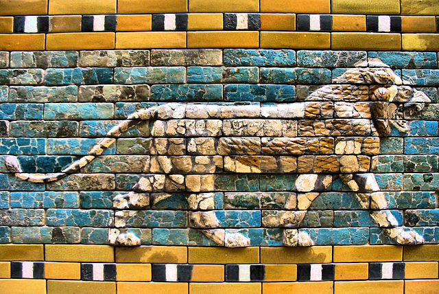

A Mesopotâmia é uma das primeiras civilizações conhecidas e desenvolveu-se entre os vales dos rios Tigre e Eufrates, atualmente onde é o território da Síria e, principalmente, do Iraque. Seu surgimento se deu por volta do ano 5.000 a.C
Ao longo de aproximadamente 4.500 anos, foi habitada por diversos povos que ora conviviam em harmonia, ora se confrontavam. Entre eles, podemos citar os sumérios, acádios, amoritas (ou antigos babilônios), assírios e caldeus (ou novos babilônios).
O que significa a palavra Mesopotâmia: a palavra Mesopotâmia foi criada pelos gregos antigos para designar a civilização que vivia entre os rios Tigres e Eufrates. Em grego, “meso” significa “no meio” e “potamos” é rio, portanto Mesopotâmia é “aqueles que estão entre os rios”, ou, também, “terra entre rios”.
Agricultura da Mesopotâmia:
Inicialmente eles se estabeleceram como caçadores-coletores nômades e produziam instrumentos feitos de pesra, osso e madeira.Aos poucos, esses grupos
começaram a cultivar vegetais e animais.Graças à isso, eles passaram a permanecer nos lugares que ocupavam, fomando as primeiras aldeias.
Entre os produtos cultivodaos por eles, podemos citar a cevada, tâmara, linho, gergelim, cebola, alho entre outros.Os primeros animais a serem domesticados foram asovelhas, cabras, porcos e bois
É importante ressaltar que a região da Mesopotâmia édesértica , portanto, para o desenvolvimento agropecuário os mesopotâmicos aprenderam a lidar com as condições naturais. Na época das cheias, os rios transbordavam e inundavam as áreas da planície. Quando as águas baixavam, uma mistura de barro e húmus se depositavam sobre a terra, favorecendo o cultivo agrícola.
A mitologia mesopotâmica era repleta de deuses e deusas, pois a religião deste povo era politeísta.A Mesopotâmia foi marcada pela importância de deuses, ritos, da astrologia e por uma produção artística onde se destacava a arquitetura.

Na mitologia suméria antiga, Ereshkigal é a rainha do submundo. Ela é a irmã mais velha da deusa Inanna. [2] Inanna e Ereshkigal representam opostos polares. Inanna é a rainha do céu , mas Ereshkigal é a rainha de Irkalla.
Ela governou esta terra sozinha, aprovando leis e julgando os mortos. Mais tarde, ela se apaixonou por Nergal, que foi enviado com oferendas de comida durante um banquete.
Como apenas os mortos puderam ficar em Attalu, ele teve que voltar para casa. Ereshkigal ficou tão chateadoa com sua partida que ameaçou o rei dos deuses que traria todos os mortos de volta à vida. Nergal foi autorizado a retornar e eles governaram o submundo juntos.
Outro mito sumério conta a história da visita de sua irmã Inanna ao submundo. A Deusa não está satisfeita em vê-la, pois teme ter chegado a dominar seu Reino. Ela a transforma em um cadáver, mas acaba sendo forçada a libertá-la.